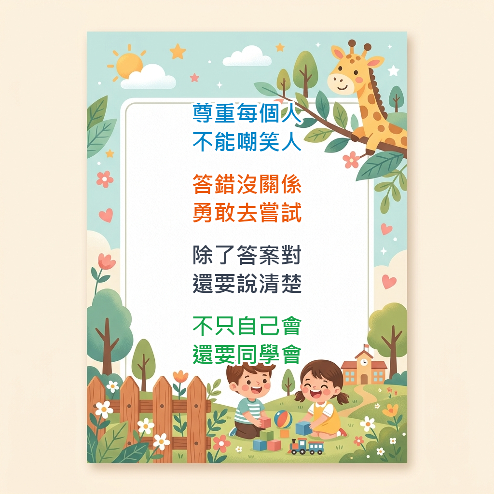

哈囉，我是 林敬修 老師
國小教師 / Apple Learning Coach / 夢N講師
關於我
關於我 (About Me)
你好！我是林敬修 老師。目前服務於國立屏科實驗高級中等學校國小部。我擁有超過 20 年的教育現場與教學經驗。
我深信「全人教育」與「因材施教」的理念，尊重每個學生的獨特性和差異性。在我的課堂中，我鼓勵學生勇於嘗試與犯錯，因為「錯誤是學習的最佳契機」。

✨ 敬修老師的課堂學習約定（引導孩子尊重、勇敢嘗試與小組合作學習）
作為 夢的N次方 國小數學共備團隊的講師，我長期深耕數學教學，落實「說數學」教學法，並結合 Apple Teacher、Apple Learning Coach 與 Google 教育家 (Level 1 & 2) 的數位認證，引導孩子以科技輔助學習，培養解決問題的素養與美學敏銳度。
🎓 學經歷 (Education & Experience)
🏫 教學經歷
- 2024 - 至今 國立屏科實驗高級中等學校國小部 教師
- 2018 - 2024 屏東縣建國國小 普通班級任教師、教學組長、總務主任
- 2013 - 2018 屏東縣彭厝國小 特教資源班教師
- 2010 - 2013 屏東縣三地國小 特教巡迴輔導班教師
- 2004 - 2010 屏東縣仙吉國小 普通班級任教師、教學組長
- 2003 - 2004 屏東縣崇蘭國小 實習教師
🎓 學術背景
- 博士 國立高雄師範大學 特殊教育學系 (特教專長)
- 碩士 國立屏東師範學院 教育心理與輔導學系
- 學士 國立台南師範學院 數理教育學系 (數學組)
🛠️ 專業技能 (Skills)
- 教學領域：國小數學教育(推動說數學)、特教與輔導、數位融入課程
- 數位科技：iPad 輔助教學、Apple 教育系列工具、Google Workspace for Education
- 專業社群：夢的N次方 國小數學共備團隊成員與講師
📂 老師使用說明書 & 自我介紹
下方是我的自我介紹與班級經營的「使用說明書」（學生版與家長版），歡迎點擊圖片放大閱讀：

精選作品
情緒性格偵探社 (Emotion & Personality Detective)
整合溫美玉老師的『五卡寶盒』教學法，提供情緒卡、性格卡、行動卡、觀點卡、與六星寫作卡的線上互動鷹架，支援 AI 偵探助教解析與五卡段落產生器。
時鐘特攻隊 (Clock Adventure)
專為國小中低年級設計的時鐘旋轉挑戰。引導孩子分辨順時針與逆時針，計算分針走動的角度，結合「AI 探長」提供解題思考與朗讀語音。
時鐘角度偵探社 (Clock Angle Detective)
專為國小中低年級設計的時鐘角度挑戰。藉由指針對比 3 點鐘（直角基準）來認識「直角、銳角、鈍角」，並結合「AI 探長」提供解題引導與語音朗讀。
小數偵探社 (Decimal Detective)
專為國小中低年級設計的二位小數闖關大挑戰。以『位值表放大鏡』為主題，整合 Google Gemini API『偵探學長助教』提供解密思考引導與語音朗讀。
分數魔法烘焙屋 (Fraction Magic Bakery Portal)
二年級至四年級分數學習入口傳送門，包含從 1.0 單位分數到 5.0 等值分數共五個關卡的互動式趣味烘焙遊戲。
分數做數大挑戰 (Fraction Quantity Challenge)
專為國小中低年級設計的分數做數挑戰。引導孩子分辨真分數與假分數的數量轉換，熟練「下除上乘」的數學魔法公式，並結合「AI 探長」提供對話式引導與語音朗讀。
圖形偵探隊 (Geometry Detective)
專為國小中高年級設計的周長與面積探案遊戲。涵蓋平移法與切割填補，整合 Google Gemini API『偵探學長助教』提供思維引導與朗讀。
成語猜猜樂 (Idiom Charades)
一個專為國小中高年級設計的『我說你猜』成語合作挑戰遊戲。結合六大成語主題，並整合 Gemini API 提供不透露答案字的趣味提示與 TTS 語音。
數線跳跳糖 (Number Line Candy)
專為國小三、四年級學生設計的數線認識互動練習。包含小數、分數與綜合挑戰，內置 Google Gemini API 引導解題以及語音朗讀。
運算規則拆彈專家 (Operation Rules Defuser)
為國小四年級四則混合運算設計的闖關拆彈小遊戲，涵蓋「由左至右」、「先乘除後加減」、「括號優先」與「去括號變號」四大拆彈心法。
平行與垂直大挑戰 (Parallel & Perpendicular Challenge)
專為國小中高年級設計的線條空間挑戰。包含直角梯形、時鐘9點、斑馬線街道、四邊形鄰邊以及三角形與迷宮等六大線條判斷，結合「AI 探長」提供提示與語音朗讀。
餘數變身之謎 (Remainder Detective)
專為國小四年級設計的除法餘數大挑戰。探討『商不變，餘數要還原』概念，結合 Gemini API 提供『總部探長助教』解密提示與『AI 懸賞單產生器』。
線段圖大冒險 (Segment Diagram Adventure)
專為國小一至六年級設計的線段圖學習遊戲。包含低中高三個難度級別，支援 SVG 線段圖繪製與 Gemini API『AI 老師求解』和朗讀功能。
簡化計算魔法學院 (Simplified Calculations Academy)
基於 React 開發的國小四年級簡化計算自學互動系統，包含加減法魔法、乘除法魔法、心算好朋友配對與五大實戰演練關卡。
最新教學紀錄
0 篇文章親職教養參考資源 (網路轉載)
推薦學習資源
推薦學習資源與好用工具清單
工欲善其事，必先利其器。在數學教學與數位融入課程的實踐中，善用優秀的線上工具能讓抽象的學科概念變得具體可視。以下是我個人在教學現場常用、且強烈推薦的線上互動教具與網頁設計資源清單：
📐 數學線上互動教具 (你的數學武器庫)
這是我為國小數學課整理的線上互動式工具，非常適合用於布題、示範、分組活動或課後練習。
🧮 百數表與數算工具
- 康軒國小數學互動布題GGB教學專區 — 豐富的 Geogebra 互動教材，適合課堂布題。
- Mathigon Polypad — 功能強大的虛擬教具牆，提供數卡、多邊形等多樣數學工具。
- 加減法練習 — 線上口算與加減練習小工具。
- 數線跳跳糖 — 自製的數線互動遊戲，支援小數與分數練習，配備「AI 老師求解」與語音提示朗讀功能。
- 十十乘法表 & 乘法大挑戰 — 九九乘法與進階乘法趣味挑戰。
- 數學練習小程式 — 提供各年級數學題目生成與線上練習。
- 康軒數算卡-等值分數 — 心算卡與分數運算互動練習。
- 翰林線段圖 — 線上線段圖布題工具，輔助文字題理解。
- 線段圖大冒險 — 自製的線段圖學習遊戲，支援 1-6 年級難度，包含「AI 老師求解」與語音提示朗讀功能。
- 運算規則拆彈專家 — 自製的四則運算規則挑戰遊戲，包含老大先走、括號優先等拆彈指令，配備詳細迷思解析。
- 簡化計算魔法學院 — 自製的簡化計算自學系統，引導學生透過填空點選，快速建立湊整十、整百、整千的簡化數感。
- 分數做數大挑戰 — 自製的分數數量轉換遊戲，引導孩子熟練「下除上乘」公式及真假分數概念，結合「AI 探長」提供提示與 TTS 語音朗讀。
- 翰林時間線 — 直觀的時間軸與跨日跨時布題工具。
- 翰林百數表 — 經典的百數格，點選即可高亮，適合探討數的規律。
🧮 除法直式運算工具 (三年級適用)
(本系列除法小工具網頁均由 賴佳瑋 老師設計)
- 二位數除以一位數（估商與錢幣變化／小怪獸版） — 適合三年級，包含十位個位整除（最基礎、不用換錢）的直式運算。
- 二位數除以一位數（整十除法） — 練習整十數的除法直式。
- 二位數除以一位數（十位有餘數要換錢） — 練習十位數有餘數，需要換錢到個位數並整除的直式。
- 二位數除以一位數（有餘數與個位補零） — 練習有餘數，以及商的個位數需要補零的直式運算。
- 三位數除以一位數（老師出題版／支援自訂題目） — 三位數除法的直式練習，支援自訂題目。
- 三位數除以一位數（隨機出題免登入版） — 三位數除法直式隨機出題小工具，無須登入即可使用。
- 餘數變身之謎 — 自製的除法簡化與餘數還原互動遊戲，破解「商不變，餘數要還原」的數學規律，配備「總部探長助教」與「AI 隨機懸賞單產生器」。
🧮 分數與位值工具
- 翰林分數板 — 圓形與長條形分數板，建立等值分數與大小概念。
- 翰林位值表 — 線上定位板，支援整數與小數的十進位值結構示範。
- 小數偵探社 — 自製的二位小數闖關挑戰，透過位值表定位解密，配備「偵探學長助教」與語音提示朗讀功能。
🧮 萬年曆與時間
- 翰林萬年曆 — 年、月、星期規律變化的動態日曆教具。
🧮 幾何、量與實作教具
- Phet 互動模擬 (數學類) — 科羅拉多大學開發的物理與數學模擬動畫。
- 康軒低年級心算卡 — 數的合成與分解、基本加減心算閃卡。
- Whiteboard (The Math Learning Center) — 多功能數學電子白板，適合隨手畫圖或布題。
- Math Clock (The Math Learning Center) — 提供動態連動的時鐘與時間區間標記，方便進行時間教學。
- Geoboard (The Math Learning Center) — 虛擬釘板，適合探討圖形周長、面積與幾何結構。
- Pattern Shapes (The Math Learning Center) — 幾何積木，適合玩圖形鋪排與認識分數.
- Number Line (The Math Learning Center) — 數線工具，在線上建立數的序性與距離概念。
- Fractions (The Math Learning Center) — 圓形與條形分數切割教具。
- Number Pieces (The Math Learning Center) — 百格板、十格條、個位積木，建立十進位積木概念。
- Number Frames (The Math Learning Center) — 十格陣、五格陣，輔助低年級數數與合成分解。
- 翰林乘法表 — 動態九九乘法表，輔助被乘數與乘數關係教學。
- 翰林立體形體 — 3D 形體透視、展開與旋轉教具。
- 翰林白色方格堆疊 — 空間堆疊方塊，點擊即可新增/刪除，方便計算積木體積。
- 翰林時鐘 — 時分針齒輪連動時鐘，支援各種類型時間題型示範。
- 時鐘角度偵探社 — 自製的時鐘角度闖關遊戲，藉由指針對比認識「直角、銳角、鈍角」，並結合「AI 探長」提供提示、專屬結案故事與語音功能。
- 時鐘特攻隊 — 自製的時鐘角度與旋轉挑戰，引導學生分辨順時針與逆時針，計算分針走動的角度，並結合「AI 探長」提供提示與 TTS 語音朗讀。
- 圖形偵探隊 — 自製的周長與面積探案遊戲，涵蓋平移法與切割填補，整合「偵探學長助教」提供思維引導與 TTS 朗讀。
- 平行與垂直大挑戰 — 自製的線條幾何空間挑戰，涵蓋直角梯形、斑馬線街道、線條迷宮與三角形組合，配合「AI 探長」提供對話引導與 TTS 語音朗讀。
- 翰林積木 — 虛擬積木堆疊與排列工具。
- 翰林錢幣 — 虛擬錢幣與鈔票布題工具，適合進行付錢與找錢教學。
✍️ 語文與成語學習工具 (合作趣味學習)
學生回饋與作品
學生優秀作品展與課後回饋
引導孩子在主題課程中「觀察、思考、合作」，並利用 iPad 與數位工具進行自主學習與創意發表。以下展示了學生在各項主題探究課程中的優秀成果（歡迎點擊連結前往 Padlet 瀏覽完整互動看板）：
🌟 學生主題探究優秀作品 (Padlet 成果展)
1. 🌉 【萬年溪橋】主題探究成果展
- 簡介：建國國小二年級主題統整課程。孩子們化身小小橋樑工程師，探索校園鄰近的萬年溪橋。透過 iPad 進行景物拍照、標記橋樑重要結構，並動手合力搭建經典的「達文西橋」與「積木橋」，最後以錄影記錄珍貴的學習心得。
- 課程亮點：結構力學探索、iPad 科技融入、達文西橋手作、學習心得錄影分享。
- 線上作品看板：點此前往萬年溪橋 Padlet 成果展
2. 🦆 【探索萬年溪：溪畔嬌客】生態探究成果展
- 簡介：第二學期的延伸課程，帶領孩子走入大自然。孩子們親自觀察萬年溪畔的動植物，利用枯枝落葉等天然廢材進行景物聯想創作，並利用假日漫步溪畔，練習錄製「小小解說員」語音與影片。
- 課程亮點：生態觀察、枯材自然創作、小小解說員親子共學、iPad 照片編輯。
- 線上作品看板：點此前往溪畔嬌客 Padlet 成果展
🌳 3. 【萬年公園】環境教育主題展
- 簡介：第一學期主題統整課程。從觀察與認識好鄰居「萬年公園」出發，孩子們通過分組觀察，主動發掘公園內的垃圾、破壞等環境問題。他們共同討論、合作想出解決辦法，並付諸愛護環境的實際行動與省思。
- 課程亮點：環境保育行動、小組思考與討論、實地觀察問題與合照、iPad 心得錄影。
- 線上作品看板：點此前往萬年公園 Padlet 成果展
💧 4. 【六塊厝水資源回收中心參訪與 Keynote 電子學習單】
- 簡介：孩子們走出校園，實地參訪六塊厝水資源回收中心，了解水資源循環的重要。參訪後，每位同學利用 iPad Keynote 軟體，獨立發揮創意，繪製並撰寫出精美的電子學習單與參訪心得。
- 課程亮點：水資源環境教育、Keynote 數位軟體應用、電子學習單創意設計。
- 線上作品看板：點此前往六塊厝參訪 Padlet 成果展
🌿 5. 【校園植物尋寶圖卡】主題探究展
- 簡介：引導學生結合自然觀察與數位排版。孩子們自主在校園內查找植物資料，並嘗試使用 iPad Keynote 軟體製作出校園植物尋寶圖卡，練習資料整理、拖拉文字、以及修改背景與字型顏色的美學版面設計。
- 課程亮點：校園植物查找、Keynote 排版、數位圖文編輯與資料整理。
- 線上作品看板：點此前往校園植物尋寶圖卡 Padlet 成果展
🎨 6. 【戴著00的男孩/女孩】三年級數位藝術創作
- 簡介：三年級上學期的數位美術探索課。孩子們利用 iPad 內建的「備忘錄 (Notes)」與「標注 (Markup)」繪圖工具，獨立繪製並創作具有個人或卡通特色、配戴特別眼鏡/裝飾的「戴著00」數位肖像畫作。
- 課程亮點：數位繪圖、iPad 備忘錄與標注功能應用、肖像畫美感設計。
- 線上作品看板：點此前往戴著00的男孩/女孩 Padlet 成果展
✂️ 7. 【小小瑪蒂斯】無邊記基本形狀剪貼創作
- 簡介：將數學幾何形狀與野獸派大師馬蒂斯（Matisse）的剪紙藝術融合。孩子們利用 iPad 的「無邊記 (Freeform)」數位白板，操作與組合多種幾何與不規則形狀，拼貼出色彩繽紛、充滿躍動感的抽象藝術數位畫作。
- 課程亮點：幾何形狀拼貼、野獸派大師風格借鏡、iPad 無邊記軟體協作與創作。
- 線上作品看板：點此前往小小瑪蒂斯 Padlet 成果展
🚭 8. 【菸害防治標誌設計】數位宣導展
- 簡介：結合健康體育教育與數位警示設計。引導學生了解菸害的危險，並利用簡報與繪圖工具設計出具有強烈警示效果的「菸害防治標誌」，提升社區與同儕的健康生活意識。
- 課程亮點：菸害防治宣導、警示圖示設計、健康教育與資訊應用整合。
- 線上作品看板：點此前往菸害防治標誌設計 Padlet 成果展
🔬 9. 【三年一班主題探究成果綜合展】
- 簡介：三年一班全體同學的綜合主題探究與數位創作展示區。集結了每位同學結合自然觀察、數位工具應用的個別優秀作品與發表。
- 課程亮點：全班綜合創作、多元主題、自主探究發表。
- 線上作品看板：點此前往三年一班 Padlet 成果展
💬 課後真實回饋與家長聲音
👤 二年一班 竑逸媽媽： 「這次的萬年溪解說員活動真的很棒！平常假日帶孩子散步只是走走看看，這次陪著他練習解說、錄音，發現孩子對萬年溪的生態認識比我想像的還要深，也變得很有自信！」
👤 三年一班 群硯爸爸： 「孩子回家很興奮地用 iPad 展示他自己做的 Keynote 電子學習單。沒想到小學三年級的孩子已經能用軟體做排版和圖文整合，這種科技融入教學的方式很能啟發孩子的學習興趣。」
👤 同儕觀摩學員 阿強： 「看了二年一班搭設達文西橋的影片，覺得孩子們動手解決問題的能力太強了！從一開始木棒一直倒，到最後抓到卡榫訣竅合力搭好，真的是一堂很棒的實作體驗課。」